install.packages("remotes")
remotes::install_github("numbats/hexmap")ETC5543-Creative Activity - hexmap R package development
hex-map
Abstract
The purpose of this research project is to develop a new R package (hexmap) that can convert the geospatial polygons (i.e. geographical regions) into a hexagon grid automatically. This offers not only a better visualization of the geographical areas but also provides accurate statistical values alongside insightful inference. Through broad academic research, it has explored relevant literature articles, new releases and R packages (such as sugerbag, geogrid and cartogram). This information helps to build up the fundamental of the package structure and workflow. The current development results and the related testing outcome will be discussed, followed by a prospect of future development direction.
Background
Since this is a new package development, researching for relevant information can not only enhance the understanding of matter but also lighten a systematical process or direction on the development (see detail on ref_sum1.rmd and ref_sum_2.rmd here).
After the literature review and relevant research, the team constructed a blueprint for this project. We listed out the essential key steps for the package. This included but was not limited to the identification and refinement of input data, computation of a hexagonal grid for the geographic regions and allocation of statistical information on the original geographic location. In each step, we examined the appropriate implementation approach(es) and adjusted the processes according to the output until the desired result. The testing for each step is summarized in ref_map.rmd, hex_elect.rmd and map.rmd under My project repository here, plus the related discussions on testing issues are posted on here.
Academic reviews
- [Example - see detail documentation on
ref_sum1.rmd]
Malaysia Election Data Visualization Using Hexagon Tile Grid Map
- This article is not a public resource, yet you can find it under “reference/Malaysia Election Data Visualization Using Hexagon Tile Grid Map” here
A Hexagon Tile Map Algorithm for Displaying Spatial Data
By Stephanie Kobakian, Dianne Cook, and Earl Duncan
Relevant news releases
- [Example - see detail documentation on
ref_sum_2.rmd]
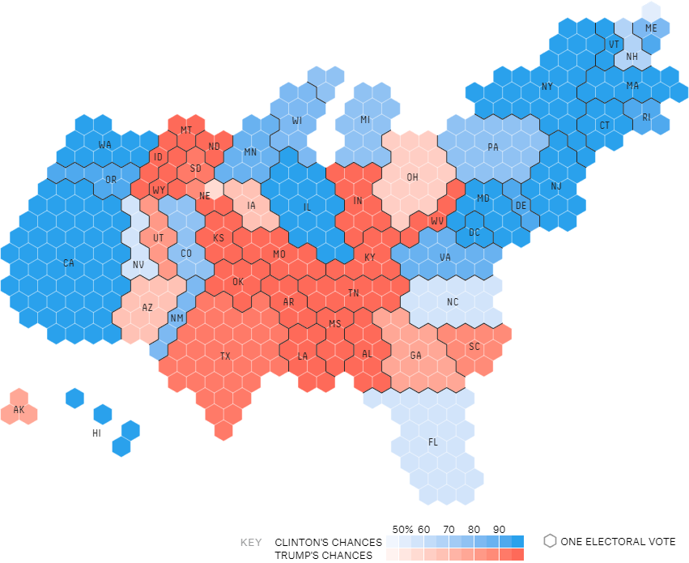
The Guardian - UK 2017 general election
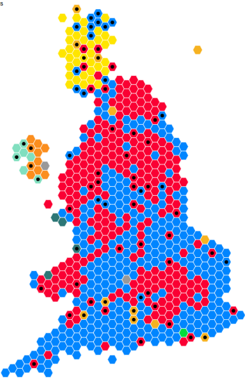
Relevant Github reporsitories (including R pacakges)
Motivation
Map illustration takes a vital role in exploratory data analysis (EDA), as it not only provides statistical information visualization but also adds geographical information to allow insightful analysis based on a specific region or area. While a map is delivering important information to users, sometimes it conveys misleading information.
With an example illustration on ABC News release on the 2022 Australian election result, it inspires an R package development to automate the conversion of conventional map visualization to a hexagonal grid for an accurate and insightful statistical inference. Therefore, hexmap will reshape the geographical area into multiple hexagons and allocate the statistics properly thus concluding reasonable and proper inference with an automatic process.
Package development - hexmap Tour
Package Installation
Briefing for hexmap
The package will automate the conversion of spatial polygons into hexagonal grids, and allow users to better visualize statistical values associated with each geographic region.
Sample data - 2022 Australian Election Data from AEC.
Input Data Type should be a Simple Features (sf) object
General workflow
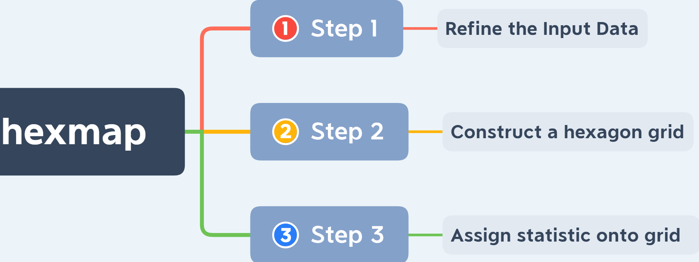
Step 1 - Refining the input data
There are multiple reasons for implementing a refinement on input data. Firstly, this will speed up the computation of later processes (i.e. steps 2 & 3). Secondly, refined data is expected to perform a better assignment of statistics on the hexagonal grid. More importantly, the current development feedback suggests this initial data pre-processing has a significant effect on allocating statistical information onto the geographic map correctly. Thus, the refinement of input data is vital for desirable output.
- Example ways of simplifying input data size:
- Using
st_simplify()fromsf
# simplifying regions based on a distance argument,
## but large distances can completely remove polygons.
inputdata %>% sf::st_simplify(dTolerance = 3000)- Functions from
sfheadersandrmapshaper
# simplifying regions to a proportion of their original vertices
inputdata %>%
sfheaders::sf_remove_holes() %>%
rmapshaper::ms_simplify(keep = 0.0001, keep_shapes = TRUE)
# keep_shapes: Prevent small polygon features
## from disappearing at high simplification- Refinement method on distorting map (functions from
cartogram)
Functions from the package (i.e. “cartogram”) can distort the original data according to a specific variable set by users.
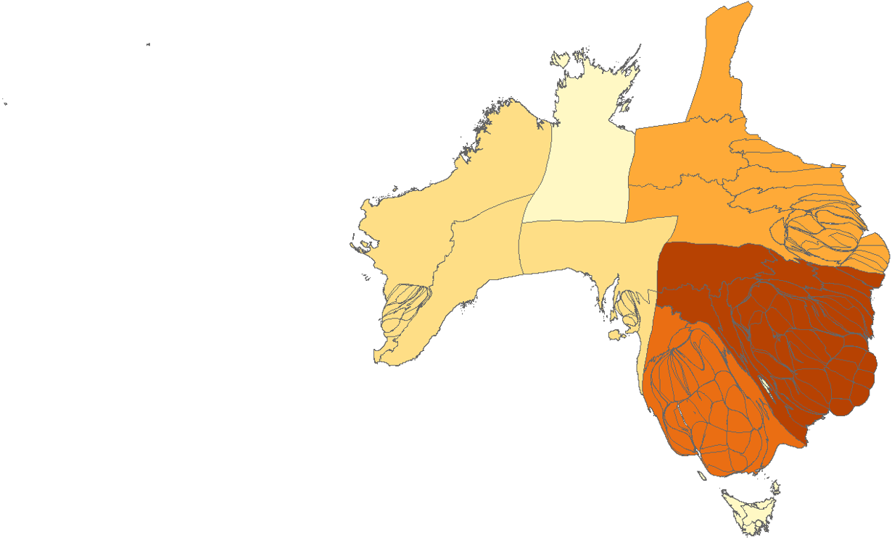
cartogram::cartogram_cont("input data", weight = "weight variable", itermax = 15)
# weight: Name of the weighting variable in x
# itermax: Maximum iterations for the cartogram transformationOptimal solution: Applying a hierarchical structure, that is using one group variable like “states” and then calculating the number of electoral in each state to capture the “weight” for each state followed with a proper distortion to ensure the next step (i.e. “step 2”) results in a faster and less complicated computation.
Step 2 - Determining the number of hexagons
Function hex_grid (from map_grid) will compute the proper number of hexagons for the geographic region. (See detailed derivation of this function in Appendix “hexagon size”.)
# The input data for this function can be any forms of `sf` objects.
hexmap::hex_grid(object, n_tiles = 100)
# object: input data (i.e. sf object)
# n_tiles: wanted number of hexagons- normal choropleth
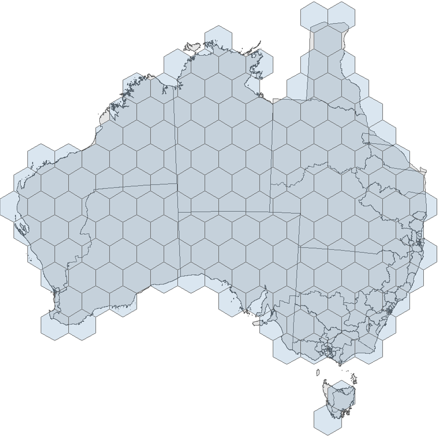
- distorted cartogram
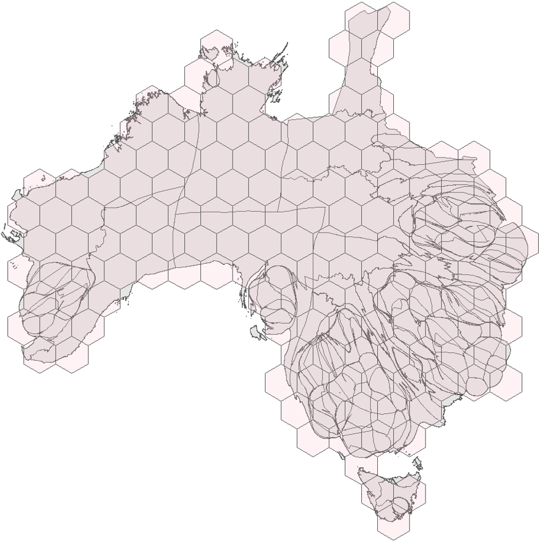
Step 3 - Allocating statistical values on hexagons
In this step, it starts the assignment of the statistical information (from original input data) onto the hexagonal grid (produced by “step 2”) using an algorithm (currently the “Hungarian Algorithm”).
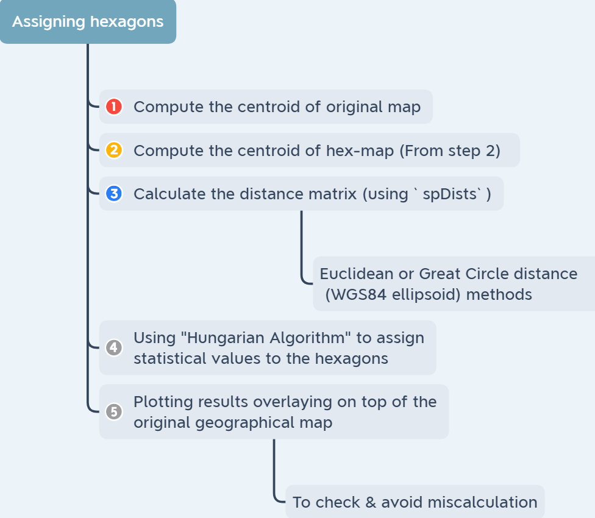
Here, the tile_allocate function from hexmap will allocate the statistical information on the hexagon grid.
Most likely, the assignment of hexagons will be measured by some sort of distance matrix to find the “best” allocation. - (Yet, an actual optimal allocation may lead to a “NP-hard problem” for optimization).
# object: input data (i.e. sf object)
# tile: output from `hex_grid` function (i.e. a sfc object)c
hexmap::tile_allocate(object, tile)- Allocation of statistical values on a normal choropleth
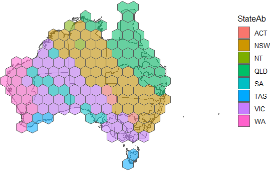
- Allocation of statistical values on a distorted cartogram
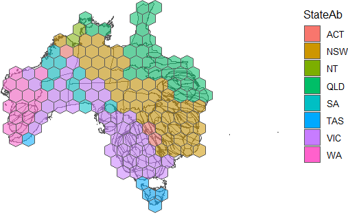
Future directions
For step 1, the refinement of the input data can be modified better to improve the information allocation accuracy in “step 3”. Instead of using functions from the “cartogram” package, writing a new function to distort or refine the input data that can result in a more effective pre-processing of the data for later steps.
Regarding the construction of the hexagonal grid in step 2, the current application (an approximation of computing the number of hexagons for the grid) is reasonable and accurate enough for the current stage of development. The optimal goal will be determining the exact width of individual hexagons when constructing the grid.
The current allocation of information on hexagonal grid accuracy in step 3 is not desirable, since there are multiple incorrect assignments for each geographic region. Through reconsidering the function (i.e. map_allocate/tile_allocate) and consultation (to experts), it suggests a better pre-processing of the input data (i.e. “step 1”) will improve the result significantly. Furthermore, searching for alternative algorithms may also provide additional insights into this allocation problem.
Conclusion & Learning outcome
This R package development project is still undergoing development and I will continue work with my supervisors on this project for future improvement and modification. Welcome to leave any helpful suggestions or report issues here. Detail of code testing and report-related material will be on my_project repository to keep the actual package repository neat for future development.
This research project experience has provided me not only a chance to apply theoretical knowledge into practice but also introduce the world of package development to me. Through a vast amount of code testing and method trials, they have offered the opportunity to explore various aspects of the R community and not limit me to purely coding but other research skills.
During the project development time, supervisors illustrated a clear academic research outline to assist me in identifying the relevant information efficiently. After the literature review, the discussion on practical coding pinpointed the key difficulties and tasks, hence I could understand the directions and process of the future development process. Moreover, learning how to use GitHub “issue” offered an efficient platform for communication and debugging any issues during the development such as sharing my testing results with supervisors and modifying for improvement or adjustment under their instructions. Therefore, this experience not only enhances my R coding and debugging skills but also introduces a systematic way of researching and R package development.
Acknowledgement
Great thanks for the guidance and supervising of Mitchell O’Hara-Wild and Emi Tanaka.
Reference
(Tanaka 2022) (Pebesma 2018) (Allaire 2022) (Bailey 2022) (Jeworutzki 2022) (Wickham et al. 2022)
Allaire, JJ. 2022. Quarto: R Interface to ’Quarto’ Markdown Publishing System. https://CRAN.R-project.org/package=quarto.
Bailey, Joseph. 2022. Geogrid: Turn Geospatial Polygons into Regular or Hexagonal Grids. https://github.com/jbaileyh/geogrid.
Jeworutzki, Sebastian. 2022. Cartogram: Create Cartograms with r. https://github.com/sjewo/cartogram.
Pebesma, Edzer. 2018. “Simple Features for R: Standardized Support for Spatial Vector Data.” The R Journal 10 (1): 439–46. https://doi.org/10.32614/RJ-2018-009.
Tanaka, Emi. 2022. Hexmap: Convert a Map into a Hex Map.
Wickham, Hadley, Romain François, Lionel Henry, and Kirill Müller. 2022. Dplyr: A Grammar of Data Manipulation. https://CRAN.R-project.org/package=dplyr.
Appendix
hexagon size
This function (map_tile/hex_grid) is a process of reverse computation based on the source code of st_make_grid function from sf package. It applies a mathematics approximation to the size of the individual hexagon.
- The size of each hexagon is controlled by the “width” (assuming for regular hexagons).
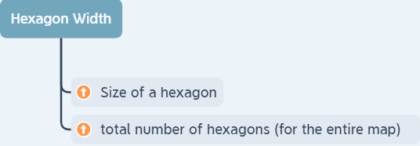
Observe “cell size” (i.e. width)
Notes: The number of hexagons in odd and even rows are different.
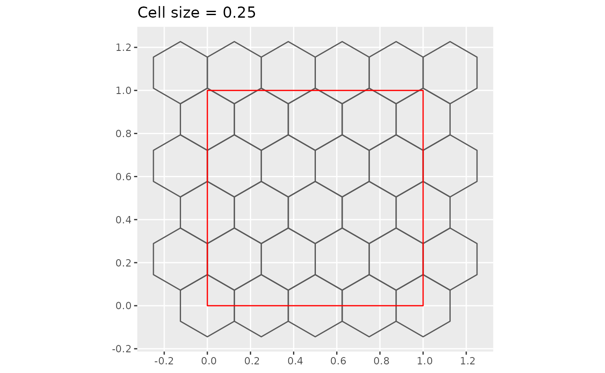
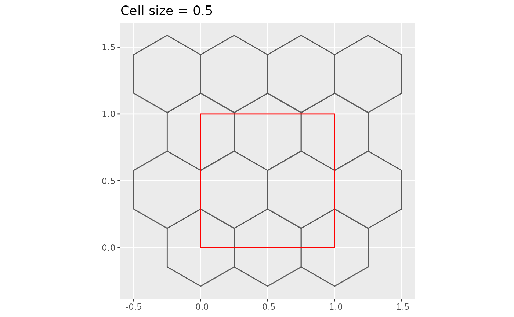
- Brief explanation on the “approximation” mathematics
# measures for the map
## Calculate the width of map
map_width <- diff(unname(st_bbox(object))[c(1, 3)])
## Calculate the height of map
map_height <- diff(unname(st_bbox(object))[c(2, 4)])
## Calculate the area of map
map_area <- st_area(st_as_sfc(st_bbox(object)))
## Calculate the map width and height ratio
map_ratio <- map_width / map_height
## Total land area
land_area <- sum(st_area(object))
## Compute land to map ratio
land_ratio <- as.numeric(land_area / map_area)
# Number of hexagons to tile map such that ~n_tiles hexagons overlap land
map_hex <- n_tiles / land_ratio
# Size of hexagons
hex_height <- map_height / sqrt(map_hex / map_ratio)
hex_width <- hex_height / (1.5 / sqrt(3))